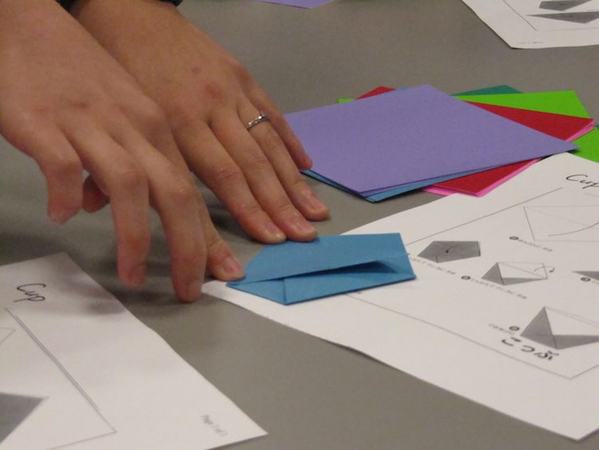
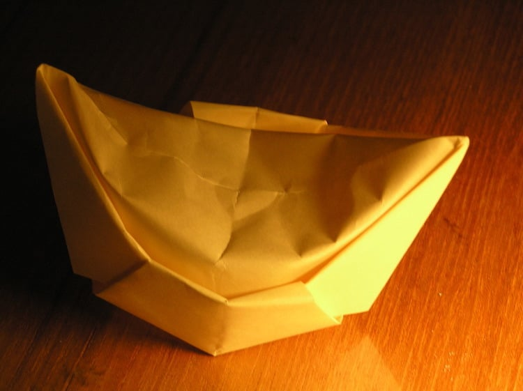

Origami: How the Ancient Art of Paper Folding Evolved Over Time and Continues to Inspire
click2google
For centuries, cultures have come up with creative ways to artistically approach, adopt, and adapt the paper craft. While many of these practices, including Korean Hanji, can be individually traced to specific countries of origin, most—including papier–mâché, a French-sounding craft that was actually conceived in ancient China—boast colorful histories that span cultures, countries, and even continents. One popular practice that has left a particularly extensive paper trail across the globe is origami, the art of paper folding.
Though most closely tied to Japan, origami also has roots in China and Europe. Here, we explore the practice's unique history to understand how each culture has shaped the beautiful and beloved art form.
What is Origami?
Origami is the art of paper-folding. Its name derives from Japanese words ori (“folding”) and kami (“paper”). Traditional origami consists of folding a single sheet of square paper (often with a colored side) into a sculpture without cutting, gluing, taping, or even marking it.
History of Origami
Creatives from several countries helped shape origami into the practice it is today

CHINA
Paper was invented in China around 105 AD, and folded paper—or zhezhi—most likely emerged shortly after. By 900 AD, paper yuanbao, or gold nuggets, were a staple at traditional Chinese funerals.
Created by meticulously folding gold or yellow paper into ingot currency, these ephemeral ornaments were crafted with the intention of being thrown into a fire at the end of the ceremony.
JAPAN
Paper was introduced to Japan in the 6th century. During this time, the practice of paper-folding emerged as a ceremonial Shinto ritual. It was not until Japan's Edo Period (1603 – 1868) that origami would also be viewed as a leisurely activity and art form.
EUROPE
In Europe, paper-folding is thought to have evolved from napkin-folding, a practice popularized in the 17th century. Much like Japanese origami, napkin-folding featured different methods and techniques that resulted in an array of abstract and figurative forms.